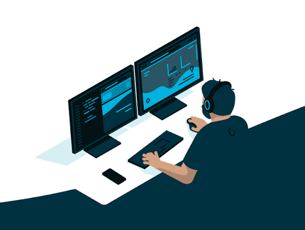
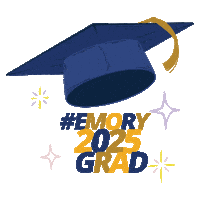

Index / 2026
Software engineer
& quantitative developer.
SDE at Amazon Global Logistics. I build low-latency systems, trading infrastructure, and market-microstructure tooling — and I like the places where clean engineering meets markets.
Explore ↘Work
-
Software Development Engineer I
Jun 2025 — PresentAmazon · Global Logistics (Domestic First Mile)
- Sole designer/implementer of Pricing Granularity, a pricing-engine extension for per-carrier, per-weight, per-zone markup resolution — unlocking ~$22MM in annual gross profit and FedEx onboarding.
- Delivered 120+ change sets across 21 packages, 20 services, 8 languages — #1 in code velocity on a 10-person team, #2 in review quality (1.2 revisions/CR).
- Authored ~7,000 lines of integration tests gating a CD pipeline; root-caused 100+ production tickets; mentored an SDE and an intern.
-
Quantitative Software Engineer
Jul 2024 — Jun 2025Skunkworks Software · stealth quantitative startup
- Built automated trading infrastructure across futures, ETFs, and options — signal generation and execution logic against multi-asset market-data feeds.
- Shipped a real-time analytics dashboard surfacing market breadth, internals, and sector rotation.
-
Hedge Fund Software Engineer
May — Jul 2024Rimrock Capital Management
- Built Python/Redis predictive models forecasting consumption and wage growth over a 3-year horizon to inform macro positioning at a multi-billion-dollar fixed-income fund.
- Received an analyst return offer (1 of 6 on the team).
-
QA Software Engineer Intern
May — Aug 2023iTrust Capital · crypto IRA platform
- Owned end-to-end QA for a platform serving 300K+ accounts across iOS and web; built regression automation with Robot Framework, Selenium, and Chrome WebDriver.
-
Software Engineer Intern
May — Aug 2022Bridge Diagnostics (acquired by Olyntis AI)
- Built internal sales-automation in Java and Power Apps for ~80 field technicians serving a 200K-client base, with Power BI reporting dashboards.
Projects

hft-matching-engine ↗
Low-latency C++20 limit-order-book engine with a lock-free SPSC ring and a latency-benchmark harness — 2.1× throughput over the baseline and a measured p50/p99/p99.9 tick-to-trade.
2.1× throughput · p50 ~84 ns tick-to-tradeMarket Making Arena ↗
Multiplayer market-making game on Cloudflare Workers/Durable Objects — WebSocket turns, matchmaking, reconnect, and self-play-trained RL bots served from KV.
self-play RL bots · 10k-scenario poolOrderBookSim ↗
C++ price-time-priority order book with Python bindings, exchange/market-data latency modeling, and TrueFX/Hawkes replay. Beat TWAP on 3/4 FX pairs with ~100% completion.
beat TWAP on 3/4 FX pairsJob Finder ↗
Daily scanner for software & quant roles across 44 top firms via the Greenhouse/Ashby/Lever APIs, with a live dashboard and self-updating digest.
44 firms · ~1,300 roles scanned dailyAlgory Capital — Quant Team Lead ↗
Managed $200K of Emory's endowment in the Quantitative Division — 75% L/S hedged equity, 25% global-macro leveraged ETFs/options.
$200K endowment managedEmory Bowl — draft model ↗
A back-tested full-PPR fantasy draft model for a home league: walk-forward validation, a draft simulator, and an ADP-refreshed 2026 "war room" board with a pick-by-pick plan.
walk-forward validated · sim-testedAwards & Competitions
- UChicago Trading CompetitionTeam Captain · Top 10
- Stevens High-Frequency Trading CompetitionTop 10
- Kaggle Computer VisionTop 0.1%
- AI Math Olympiad 3Top 15%
Education

Emory University · Goizueta Business School
Aug 2021 — May 2025B.B.A. in Computer Science & Finance · GPA 3.98/4.00 · Summa Cum Laude
Coursework: Deep Learning on Graphs · Quantum Computing · AI & Simulations · Computer Graphics · Probability · Statistics
About
I'm a software engineer and quantitative developer based in Minneapolis. My work sits at the intersection of systems engineering and markets — matching engines, execution, and trading infrastructure. Outside of that: futures trading, piano, four marathons, beach volleyball, scuba, and travel (triple citizenship).
Languages
Python · C++ · Swift · Java · C · SQL · JavaScript · TypeScript · Bash
Backend / Cloud
AWS · GraphQL · REST · Flask · Cloudflare Workers · Durable Objects · WebSockets · SQLite
Engineering
CI/CD · Testing · Monitoring · Data pipelines · Low-latency systems · pybind11 · NumPy/Pandas
Play
A tiny reflex game — click the signals before they fade. 20 seconds on the clock.
Or play a full game of Pac-Man ↗ I built in HTML5 canvas.